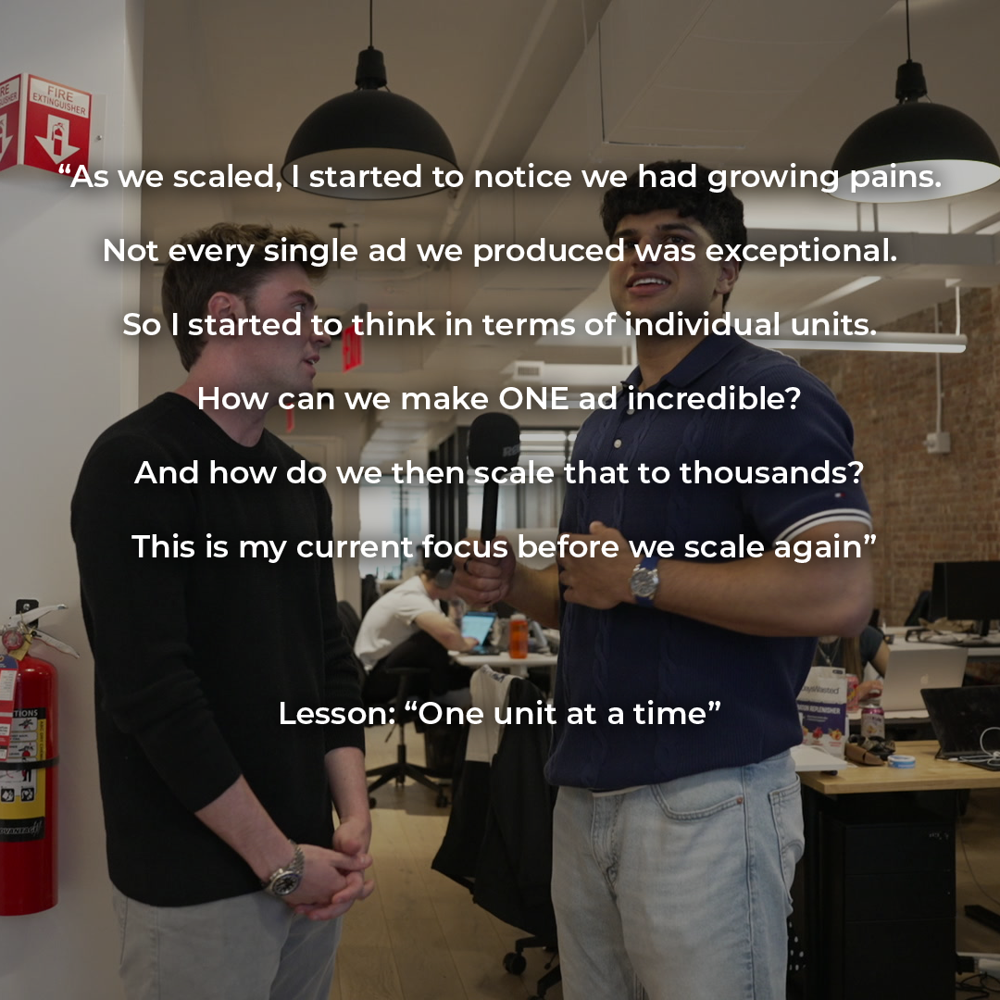
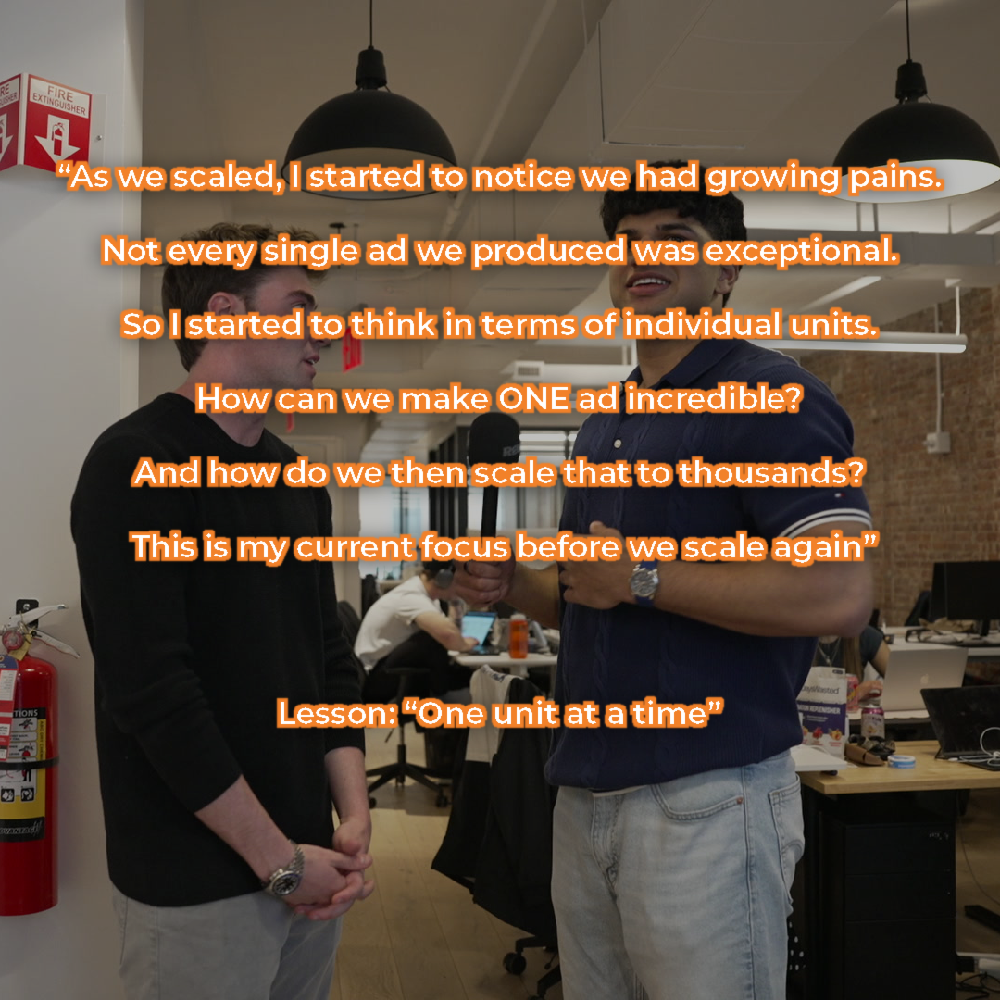

#F28129 · stroke width ~4px

Stroke applied directly around the existing white text so the exact font (Montserrat SemiBold),
size and layout are untouched. Original file is preserved — the stroked version is saved as
Untitled-6_orange-stroke.png. Say the word to go thicker/thinner or roll it out to the other slides.